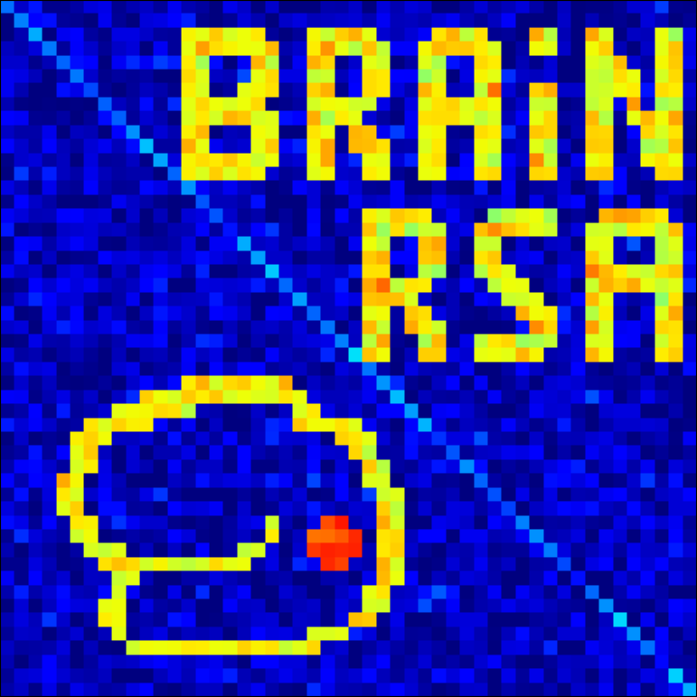
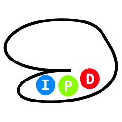
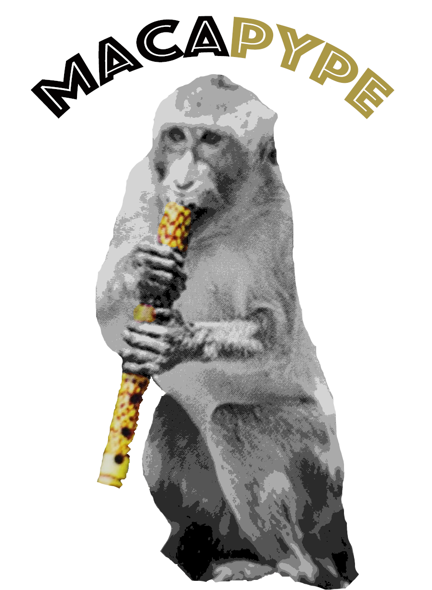
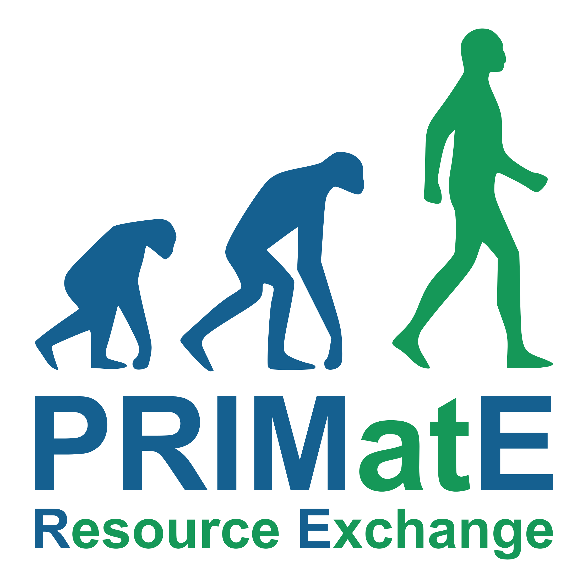

After working almost 4 years on preprocessing and analysis of functional MRI data at the Institut de Neurosciences de la Timone in Marseille, France, I am now working at Neurospin in Saclays, France on anatomical MRI data. Here you can find some resources that I setup during my job.
Projects
-
 BrainRSA
BrainRSA is a modest Python package set up to perform RSA analysis in a searchlight framework. It mainly includes brain RDM estimation, comparison to models and plottings.
-
 Individual Patch Detection
This package provides a pipeline that detect individual patches activated by a given functional task.
-
 Macapype
The aim of this project is to create a python package that provide all the tools needed to preprocess anatomical data of non humain primate. It also aim to provide a standard pipeline for different species, starting with macaques.
-
 PRIME-RE
PRIMate-Ressource Exchange aims to provide an overview of the main difficulties and curate a collection of solutions that currently exist within the broader NHP-MRI community for specific processing steps that are commonly performed on NHP MRI data.
-

Web Brain Viewer
A javascript viewer made to look at volumic and surfacic brain data online.
Publications
Articles
- Mapping individual differences in cortical architecture using multi-view representation learning. Akrem Sellami, François Xavier Dupé, Bastien Cagna, Hachem Kadri, Stéphane Ayache, Thierry Artières, Sylvain Takerkart. Bio arXiv preprint, 2020
- Accelerating the evolution of nonhuman primate neuroimaging. Prime-DE consortium. Neuron, 2020
- Single-trial fMRI activation maps measured during the InterTVA event-related voice localizer. A data set ready for inter-subject pattern analysis Virginia Aglieri, Bastien Cagna, Pascal Belin, Sylvain Takerkart. Data in brief, 2020
- Inter-subject pattern analysis: A straightforward and powerful scheme for group-level MVPA. Qi Wang, Bastien Cagna, Thierry Chaminade, Sylvain Takerkart. NeuroImage, 2020